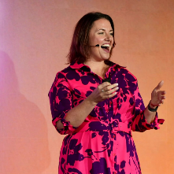
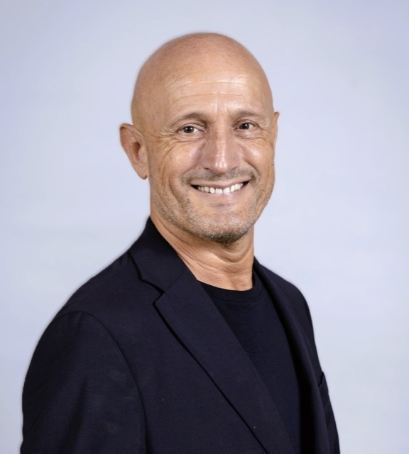
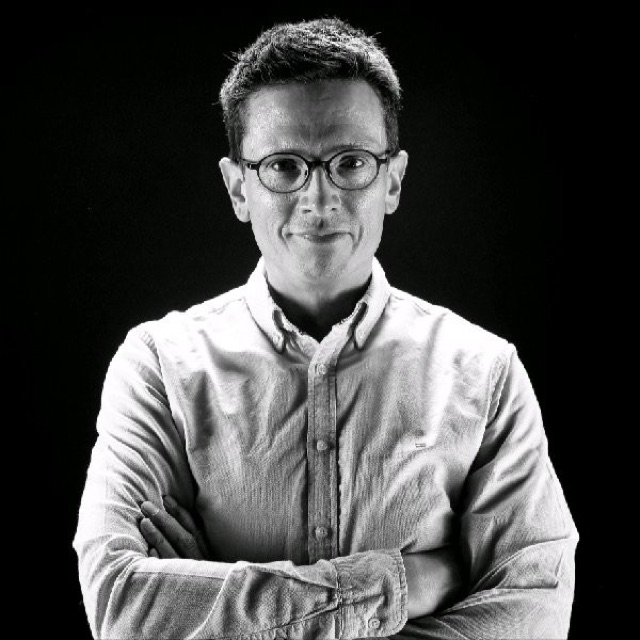
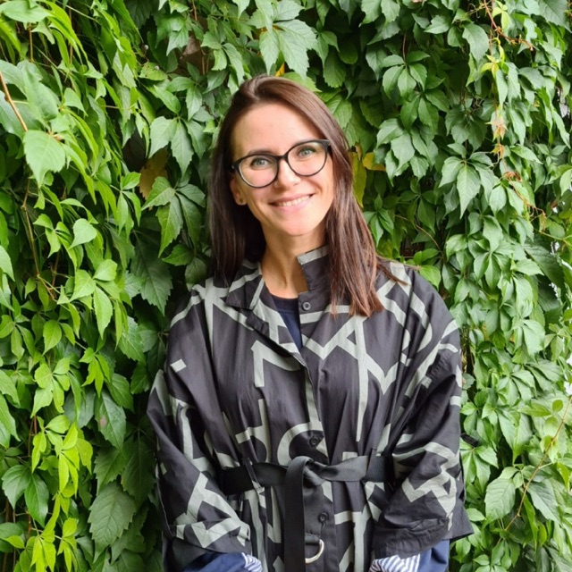
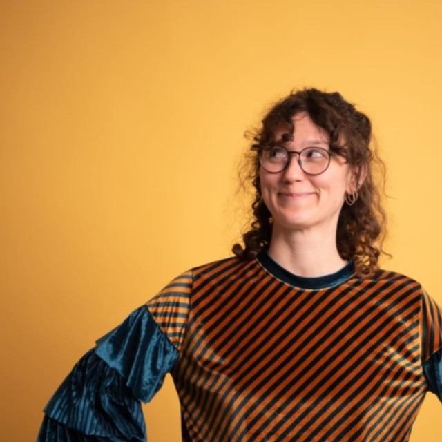
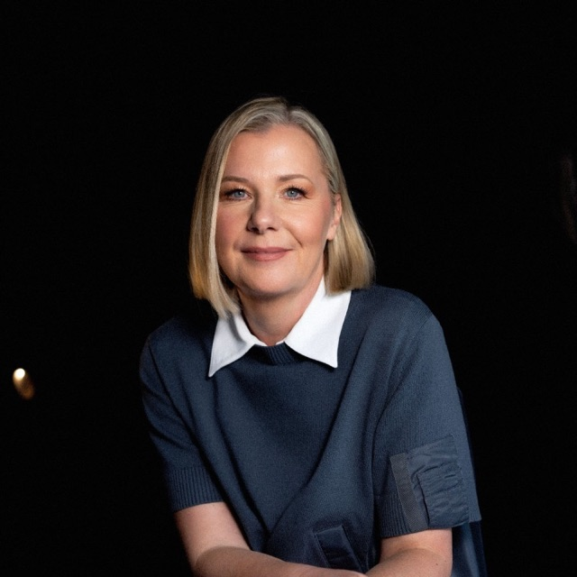

The Internal Communication Research Hub (ICRH) is a community of academics and practitioners interested in internal communication, employee engagement and dialogue in the workplace.
ICRH-Europe is a community of academics and practitioners who are interested in internal communication, employee engagement and dialogue in the workplace.
We're part of the wider ICRH community, extending its work across Europe.
Lead, ICRH-Europe
Kevin leads ICRH-Europe, connecting the network's academics and practitioners across the continent and extending the wider ICRH community's work into Europe.
Public Relations Professor, ICRH
ICRH is housed within the University of Florida College of Journalism and Communications. It is led by Professor Linjuan Rita Men, a renowned expert in internal communication, employee engagement, leadership communication and emerging technology.
The ICRH-Europe group consists of volunteers drawn from academia and practice across Europe.
Director of Internal Communication, Bank Gospodarstwa Krajowego
Edyta has been working in public relations for 17 years and for over 15 years in internal communications in the financial sector. She gained her experience in banks and PR agencies. The internal campaigns carried out by her team have won many awards in Polish and international industry competitions, including BEA World, European Excellence Award, Golden Paperclips, Golden Arrow, and Digital Communication Award. She is a panellist and speaker at many events and the only Strategic Communication Management Professional (SCMP) certified communicator in Poland.
Founder & Managing Partner, iComms/PinPoint
Ada has more than 20 years of experience in helping companies create effective communication strategies. She focuses on building engaged, high-performing teams by offering expert support to executives and leaders, especially when they face tough communication challenges.
Interim Professor for Strategic Communication, Ludwig-Maximilians-Universität München
Nora's main research interests include internal/informal communication, communication of corporate responsibility, personalized communication and media content as well as effects of personalization and mis- and disinformation.
Professor of Public Relations Research, Chair of the Department of Communication, University of Vienna
Sabine has researched and published widely on topics of corporate communication and stakeholder psychology. In particular, her research focuses on the effects of negative publicity and crisis communication, complaint management, employee communication and reputation management and measurement. She has also consulted on these topics for various major corporations.
Academic Director, Master in Corporate Communication, Protocol and Events, Universitat Oberta de Catalunya (UOC)
Elisenda's research interests focus on internal communication, sustainability communication, and event management. She is particularly interested in the role of internal communication in organizational change and digital transformation, as well as in its contribution to employee engagement, and change communication. She also worked for more than 10 years in public relations consultancies (Llorente & Cuenca, Hill + Knowlton Strategies) and in-house communication departments (CAATEEB, DiR).

Founder and CEO, Redefining Communications
Jenni works with CEOs, senior leadership teams and communication directors as a leadership and communication consultant. Organisations bring her in when internal communication isn't working, change keeps stalling, or leaders aren't being followed the way the org chart says they should be.

Professor and Researcher, Ramon Llull University
Joan's research focuses on internal communication, organisational change and resilience, employee wellbeing and strategic communication, including the CISEELAP project on internal communication in public administration. He currently leads the EUPRERA Internal Communication and Management Network, is a board member of DIRCI and a member of DIRCOM, combining academic research with professional practice.
Researcher, Professor, Department of Strategic Communication, Lund University
Mats has a particular expertise in internal communication, strategic listening, change communication, internal crisis communication, crisis communication, value creation and communication, and the communicative organization. He has more than 25 years of experience as a researcher and educator, and actively publishes research in books, articles, and reports.
Research Associate in Strategic Communication and Doctoral Candidate, Universität Leipzig
Jeanne's research interest lies in corporate communications. She studied Media Studies in Dresden and Krakow and received her Master's degree in Communication Management at Leipzig University.
Senior Associate Professor in Internal Strategic Communication, DMJX Danish School of Media and Journalism
Vibeke is passionate about exploring coworkers as communicators on both internal and external social media. Her PhD focused on coworkers as communicators on internal social media, where she explored challenges with introducing a social intranet, coworker self-censorship on internal social media and what happens to the organization when coworkers communicate with each other across the organization. Since 2000 she has worked with internal and external digital communication in organizations.
Founder, All Things IC
Rachel has advised leaders on internal communication and change communication for more than three decades, helping them create the clarity, understanding and alignment needed to achieve organisational goals.
Research Team Manager on Talent and People Management, MIK Research Center-Mondragon University Enpresagintza
Begoña specialises in HRM Strategy and Talent Management, working at the intersection of research and organizational practice. Her work bridges basic research, applied research, and business reality with a clear purpose: translating rigorous evidence into strategic people decisions while generating meaningful research from real-world organizational challenges.
Managing Partner, Corporate Diplomat & Lecturer, Luxembourg School of Business
Louis is a board member, senior advisor and lecturer with extensive experience at the intersection of governance, transformation and reputation. Drawing on corporate experience across listed and privately held companies and almost 100 M&A transactions, he brings independent judgement and a long-term perspective to boards navigating M&A, succession and strategic change, with particular expertise in stakeholder alignment, leadership and family business.

Study Dean and Professor for Communication Management, Macromedia University
Holger studied in Münster and Aix-en-Provence in France and later held extended Visiting Research Fellowships at the Universities of Cambridge and Lugano. Professionally, he spent many years in leading positions at the management consultancy Roland Berger Strategy Consultants, Bertelsmann AG and the Bertelsmann Foundation, and as a director of an owner-managed German agency group.
Associate Professor, Dept of Communication, Lund University
Charlotte's interests are in change processes, communication between managers and employees, dialogue, employee engagement, communication strategies and storytelling. As a consultant she worked with communication audits of various kinds as well as coaching and training of managers and communication professionals.

PhD Candidate, HSE University
Elena is general manager of Prout Group, an events management company, and a PhD candidate researching internal communication.

Assistant Professor, Institute for Communication Management and Media, University of Vienna
Julia completed her doctorate at the Institute of Communication at the University of Vienna on the topic of “Appreciation in the workplace”. She is currently an assistant professor at the Vienna University of Economics and Business where she is continuing her work on organizational communication and employee communication in times of change and crisis.

Professor, Department of Marketing, Faculty of Economics and Business, University of Zagreb
Ana's scientific and teaching work includes various communication disciplines, primarily the fields of marketing communication, public relations, advertising and internal communication. She is a lecturer and co-lecturer of numerous courses and has published numerous papers in recognized international scientific journals. She is the recipient of the “Mijo Mirković” award for authorship of the university textbook “Public Relations”.
VP Internal & Employee Engagement Communications, Fresenius Medical Care
Chris is a C-suite comms professional with more than 20 years' experience in delivering measurable results at embedding company culture and strategy in Fortune 500 companies – contributing to a positive reputation and securing long-term relationships with internal and external stakeholders.
Senior Researcher (post doc), Corporate Communication Research Group, University of Vienna
Ingrid combines perspectives from communication and organizational psychology to explore how communication shapes employees' experiences and organizational life. Her research examines how internal organizational communication can foster inclusion, appreciation, and well-being, with a particular focus on diversity, equity, and inclusion (DEI) communication and cross-cultural comparisons.
Get new publications, event invitations, and research updates from ICRH Europe in your inbox.
Join the network